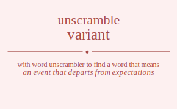

The word found after unscrambling variant means that an event that departs from expectations, (biology) a group of organisms within a species that differ in trivial ways from similar groups, a variable quantity that is random, something a little different from others of the same type, differing from a norm or standard, exhibiting variation and change, .
